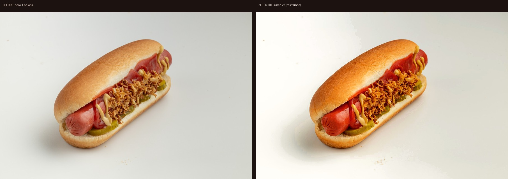
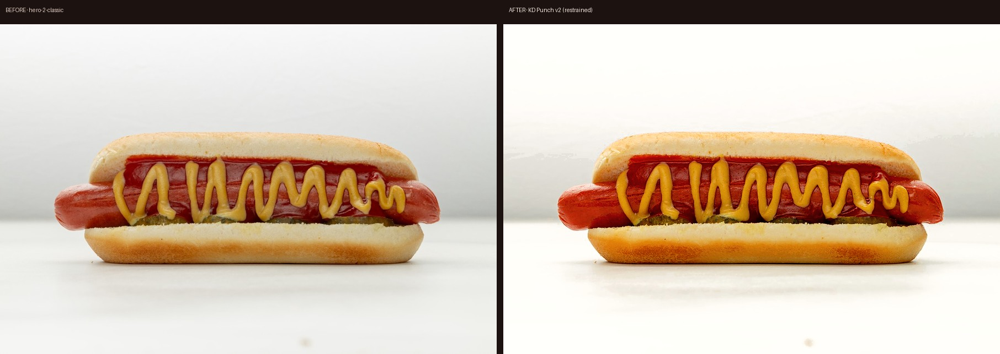
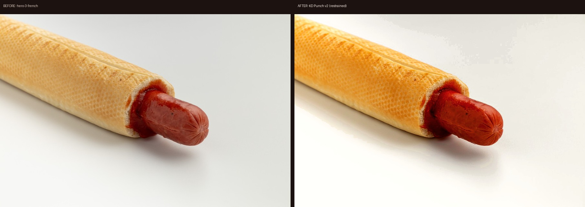
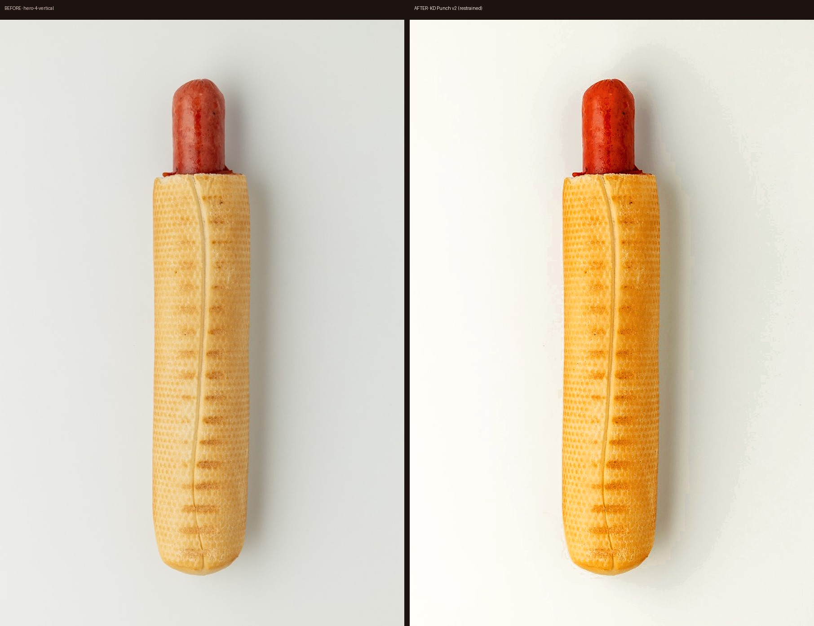

«Модность» = жёстче свет + чистый фон + selective color + смелый crop. Ниже — ваши кадры до/после пресета KD Punch v2 и правила.




| Рычаг | Каталог (было) | Punch (цель) |
|---|---|---|
| Свет | Мягкий со всех сторон | Ключ сбоку + блик + тень |
| Фон | Серо-белый | #FFF или brand color |
| Цвет | Neutral / muted | HSL: Red/Yellow/Green + |
| Crop | Много воздуха | Крупнее, diagonal / macro |
| Стайлинг | Сухо, идеально | Сок, живой соус, хруст лука |
Перегретый оранжевый фильтр, грязный вырез фона, «Instagram soap» по всему кадру.
Чистый punch: красный кетчуп, жёлтая горчица, читаемая тень, бренд-системный фон.
Открыть локально: open docs/photo-retouch/moodboard.html. After-файлы — в before-after/*-after.jpg.